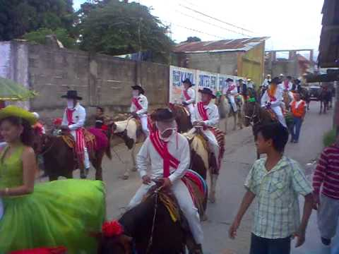
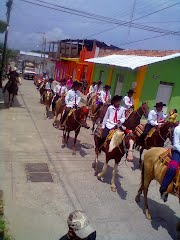
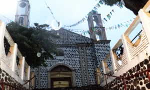
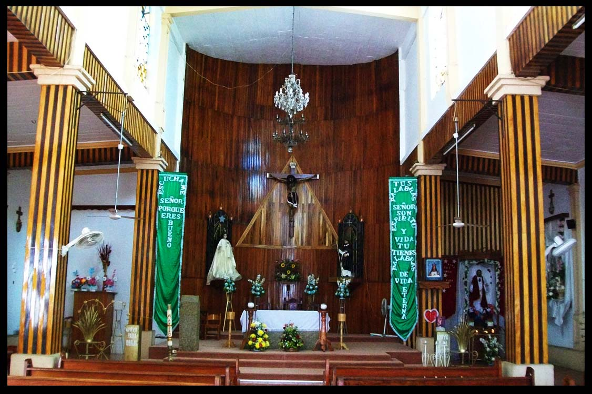
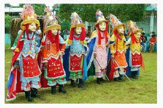

La reconstrucción del nuevo templo se culmina en mayo de 1965, tan solo año y medio después de su inicio, tiempo record en este tipo de edificaciones. Culminada la obra del templo, en octubre del mismo año se inician los trabajos para la construcción de la casa parroquial y sus oficinas, indispensables para el buen funcionamiento de una iglesia. En diciembre de 1966 se termina la planta baja de la casa parroquial y en la torre norte de la iglesia luce un reloj que regalan los estudiantes escuintlecos. El 27 de diciembre de 1967 es consagrado el nuevo templo al cual le otorgan categoría de Parroquia. En enero de 1968 se terminan los trabajos de la planta alta de la casa parroquial y en el mes de julio de 1969 son culminados los trabajos de las oficinas y el salón de labores para la juventud en su plata alta. En la actualidad se celebra una fiesta en el mes de agosto en honor al Templo de Santo Domingo de Guzmán.
Dr. Belisario Domínguez # 14. Apdo. Postal # 26. 30600 Escuintla, Chiapas
Dr. Belisario Domínguez # 14. Apdo. Postal # 26. 30600 Escuintla, Chiapas
Representación de moros y cristianos, se corona a la Florecita de Santo Domingo de Guzmán. Los feligreses acuden a las misas llevando las ofrendas florales, además en el transcurso de los festejos se llevaran a cabo las tradicionales carreras de valonas o Corridas de Caballos.





posicione el mouse sobre las imágenes